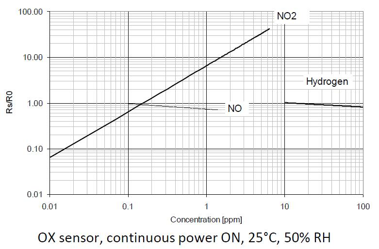

Xadow – Multichannel Gas sensor is a very small sensor board with a compact MOS sensor, MiCS-6814.
The MiCS-6814 is a robust MEMS sensor for the detection of pollution from automobile exhausts and for
agricultural/industrial odors. This sensor board has two standard Xadow interfaces. It is very easy to
use with Xadow - Main Board.
| Item | Condition | Min. | Typ. | Max. | Unit |
|---|---|---|---|---|---|
| Voltage | - | 3.1 | 3.3 | 3.5 | V |
| Ripple | @Max Power | - | 80 | 100 | mV |
| Heating Power | - | - | - | 88 | mW |
| Max Power | - | - | - | 150 | mW |
| ADC Precision | - | - | 10 | - | Bits |
| ADC Voltage | - | 0 | - | 3.3 | V |
| I2C Rate | - | - | 100 | 400 | kHz |
| VIL | @I2C | -0.5 | - | 0.99 | V |
| VIH | @I2C | 2.31 | - | 3.8 | V |
| Characteristic RED sensor | Symbol | Typ | Min | Max | Unit |
|---|---|---|---|---|---|
| Sensing resistance in air | R0 | - | 100 | 1500 | kΩ |
| Typical CO detection range | FS | - | 1 | 1000 | ppm |
| Sensitivity factor | SR | - | 1.2 | 50 | - |
| Characteristic OX sensor | Symbol | Typ | Min | Max | Unit |
|---|---|---|---|---|---|
| Sensing resistance in air | R0 | - | 0.8 | 20 | kΩ |
| Typical NO2 detection range | FS | - | 0.05 | 10 | ppm |
| Sensitivity factor | SR | - | 2 | - | - |

| Characteristic NH3 sensor | Symbol | Typ | Min | Max | Unit |
|---|---|---|---|---|---|
| Sensing resistance in air | R0 | - | 10 | 1500 | kΩ |
| Typical NH3 detection range | FS | - | 1 | 300 | ppm |
| Sensitivity factor | SR | - | 1.5 | 15 | - |

You can get start with Xadow - Main Board
Hardware Installation:
Driver. Note: when connect Xadow - Multichannel Gas Sensor to Xadow - Main Board, you should concern about
the connection direction. The connection method is that the unfilled corner of one xadow module
need to connect to the right angle of another module(see four corners of each xadow module).
Upload Code:
The content of ReadSensorValue_Xadow.ino please refer to below.
/*
This is a demo to test MutichannelGasSensor library
This code is running on Xadow-mainboard, and the I2C slave is Xadow-MutichannelGasSensor
There is a ATmega168PA on Xadow-MutichannelGasSensor, it get sensors output and feed back to master.
the data is raw ADC value, algorithm should be realized on master.
please feel free to write email to me if there is any question
Jacky Zhang, Embedded Software Engineer
qi.zhang@seeed.cc
17,mar,2015
*/
#include "xadow.h"
#include <Wire.h>
#include "MutichannelGasSensor.h"
void setup()
{
Xadow.init();
Serial.begin(9600); // start serial for output
Serial.println("power on!");
mutichannelGasSensor.begin(0x04);//the default I2C address of the slave is 0x04
//mutichannelGasSensor.changeI2cAddr(0x10);
//mutichannelGasSensor.doCalibrate();
//delay(8000);
while(mutichannelGasSensor.readR0() < 0)
{
Serial.println("sensors init error!!");
delay(1000);
}
Serial.print("Res0[0]: ");
Serial.println(mutichannelGasSensor.res0[0]);
Serial.print("Res0[1]: ");
Serial.println(mutichannelGasSensor.res0[1]);
Serial.print("Res0[2]: ");
Serial.println(mutichannelGasSensor.res0[2]);
mutichannelGasSensor.powerOn();
}
void loop()
{
mutichannelGasSensor.readR();
Serial.print("Res[0]: ");
Serial.println(mutichannelGasSensor.res[0]);
Serial.print("Res[1]: ");
Serial.println(mutichannelGasSensor.res[1]);
Serial.print("Res[2]: ");
Serial.println(mutichannelGasSensor.res[2]);
mutichannelGasSensor.calcGas();
Serial.print("NH3: ");
Serial.print(mutichannelGasSensor.density_nh3);
Serial.println("ppm");
Serial.print("CO: ");
Serial.print(mutichannelGasSensor.density_co);
Serial.println("ppm");
Serial.print("NO2: ");
Serial.print(mutichannelGasSensor.density_no2);
Serial.println("ppm");
Xadow.greenLed(LEDON);
delay(500);
Xadow.greenLed(LEDOFF);
delay(500);
Serial.println("...");
}
Arduino environment, and select the correct serial port Xadow - Main Board is using. Or you could
select Arduino Leonardo to instead of it.
By opening the serial monitor, you can see the raw data read from sensor.